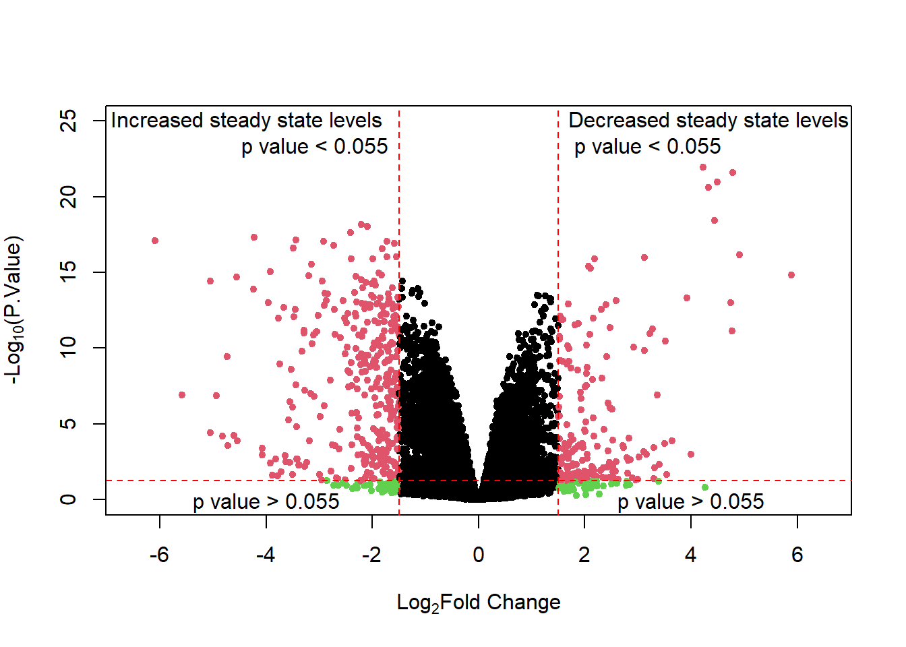

library(tidyverse)
Note
Nice work in general. Some minor editing of your section titles and some of the text. Added a hyperlink to the relevant online database. You’ve done a good job adding explanation to the code. A new person could read this and understand (and use) the data.
Goal of Assignment 2
In the quest to ensure data reproducibility, my goals are to:
- Collect data of interest.
- Import my data of interest into Rstudio.
- Describe the data.
- If time permits, host the data on a repository; probably github.
Importation of ‘Proteomic’ Data
Proteomic.Data <- read.csv("MyData/2022-03-21_trim-stacked.csv")
head(Proteomic.Data) Systemic.name contrast UniprotID Gene logFC P.Value Length
1 Q0140 WTHsc82_vs_A583T P02381 VAR1 -0.3271929 0.19173919 398
2 Q0140 WTHsc82_vs_K102E P02381 VAR1 0.3134806 0.21029408 398
3 Q0140 WTHsc82_vs_W296A P02381 VAR1 0.1298284 0.59829379 398
4 Q0140 WTHsc82_vs_G309S P02381 VAR1 0.2124945 0.39108154 398
5 Q0140 WTHsc82_vs_G424D P02381 VAR1 -0.2209043 0.37293750 398
6 Q0140 WTHsc82_vs_S481Y P02381 VAR1 0.4484938 0.07845312 398
Mass Hsc82_phys Gravy.Score Half.life Instability.Index
1 47123 0 -0.79 10.8 41.68
2 47123 0 -0.79 10.8 41.68
3 47123 0 -0.79 10.8 41.68
4 47123 0 -0.79 10.8 41.68
5 47123 0 -0.79 10.8 41.68
6 47123 0 -0.79 10.8 41.68
Protein.Abundance.Median.Absolute.Deviation Aliphatic.Index
1 1811 81.18
2 1811 81.18
3 1811 81.18
4 1811 81.18
5 1811 81.18
6 1811 81.18Data Collection
The ‘proteomic’ data are the processed results of Data Independent Acquisition Mass Spectrometry experiments that quantified the relative protein abundances in cell lysates of mutant yeast compared to those of wild-type yeast. After processing the signal intensities of the 2 spectra (mutant vs wildtype), the calculated measurement is presented as Log base 2 Fold Change. Resources and information regarding proteins detected in our experiments are available at Saccharomyces Genome Database.
Summary of Proteomic Data
An advantage of the glimpse command is a neater output of the dataframe dimensions, column names, column class type, and ‘sample’ view of the actual data in the columns.
glimpse(Proteomic.Data)Rows: 22,338
Columns: 14
$ Systemic.name <chr> "Q0140", "Q0140", "Q0140",~
$ contrast <chr> "WTHsc82_vs_A583T", "WTHsc~
$ UniprotID <chr> "P02381", "P02381", "P0238~
$ Gene <chr> "VAR1", "VAR1", "VAR1", "V~
$ logFC <dbl> -0.32719293, 0.31348064, 0~
$ P.Value <dbl> 1.917392e-01, 2.102941e-01~
$ Length <int> 398, 398, 398, 398, 398, 3~
$ Mass <int> 47123, 47123, 47123, 47123~
$ Hsc82_phys <int> 0, 0, 0, 0, 0, 0, 0, 0, 0,~
$ Gravy.Score <dbl> -0.79, -0.79, -0.79, -0.79~
$ Half.life <dbl> 10.8, 10.8, 10.8, 10.8, 10~
$ Instability.Index <dbl> 41.68, 41.68, 41.68, 41.68~
$ Protein.Abundance.Median.Absolute.Deviation <int> 1811, 1811, 1811, 1811, 18~
$ Aliphatic.Index <dbl> 81.18, 81.18, 81.18, 81.18~Data Dictionary
What are these columns and what do the values contained in them even represent? What on earth is a ‘Gravy.Score’? Fortunately, I have created a legend containing variable (attribute) descriptions.
Attributes <- read.csv("MyData/Column_Descriptions.csv")
knitr::kable(Attributes)| Column.names | Data.type | Attribute.type | Description |
|---|---|---|---|
| Systemic.name | Item | NA | Unique ID for gene |
| contrast | Attribute | Categorical | Pair-wise comparison between wild type and each yeast mutant |
| UniprotID | Item | NA | Unique ID for gene |
| Gene | Item | NA | Common name given to gene |
| logFC | Attribute | Quantitative | Relative protein abundance between mutant yeast to wildtype on log base 2 scale; negative values signify increase in abundance and positive values signify decrease in abundace |
| P.Value | Attribute | Quantitative | Stastical significance of measurements (3 biological replicates) |
| Length | Attribute | Quantitative | The number of amino acid residues in protein sequence |
| Mass | Attribute | Quantitative | the calculated mass of protein sequence |
| Hsc82_phys | Attribute | Quantitative | If it is known to physically interact with Hsc82 protein; 1 means physical interaction; 0 means no physical interaction |
| Gravy Score | Attribute | Quantitative | Is a estimation of how hydrophobic a protein is overall, more positive equals more hydrophobic, but does not take into account 3D structure. |
| Half-life | Attribute | Quantitative | The time it takes in minutes for the cell to turn-over/degrade half the protein population |
| Instability Index | Attribute | Quantitative | Estimation whether protein is stable in a test tube, values less than 40 are more stable than proteins with values greater than 40 |
| Protein-Abundance-Median-Absolute-Deviation | Attribute | Quantitative | Calculated estimate of protein molecules per cell |
| Aliphatic Index | Attribute | Quantitative | The amount of volume occupied by aliphatic side chains such as Alanine, valine, isoleucine, and leucine; greater values may be indicative of thermostability. |
1st Action-Target pair: Search:Explore - Extremes
Now that we have an understanding of the data we are working with. It is time to start using this data to answer a variety of questions related to my research and field. One of the most well known things in my field, is that perturbing Hsp90 function could affect the steady state levels of gene products (proteins) directly and indirectly. Therefore, first question is:
How many, if any, proteins had a significant change in their steady-state levels in at least one mutant condition?
Gene <- unique(Proteomic.Data$Gene[abs(Proteomic.Data$logFC) >= 1.5 &
Proteomic.Data$P.Value <= 0.055])Code
Hits <- paste(length(Gene), "out of", length(unique(Proteomic.Data$Gene)), "proteins were significantly affected in at least one mutant condition; Here we consider any protein whose steady state level changed by at least 1.5 (|Log2FC|)" )
knitr::kable(Hits)| x |
|---|
| 350 out of 2482 proteins were significantly affected in at least one mutant condition; Here we consider any protein whose steady state level changed by at least 1.5 (|Log2FC|) |
Considering we found these genes of interest using the attributes ‘logFC’ and ‘P.Value’; lets use these attributes to visualize our findings.
Code
x <- Proteomic.Data$logFC
y <- -log10(Proteomic.Data$P.Value)
group <- rep(1, nrow(Proteomic.Data)) # Create group variable
group[abs(x) >= 1.5 & y >= -log10(0.055)] <- 2
group[abs(x) >= 1.5 & y <= -log10(0.055)] <- 3
plot(x, y,
col = group,
pch = 20,
ylim = c(0,25),
xlim = c(-6.5, 6.5),
xlab = expression("Log"[2]*"Fold Change"),
ylab = expression("-Log"[10]*"(P.Value)")
)
abline(v = c(1.5, -1.5), col = "red", lty = 2)
abline(h = -log10(0.055), col = "red", lty = 2)
text(x = 1.45, y = 24, labels = "Decreased steady state levels \n p value < 0. 55",
pos = 4, offset = .5)
text(x = -1.45, y = 24, labels = "Increased steady state levels \n p value < 0. 55",
pos = 2, offset = .5)
text(x = -4, y = -log10(0.055), labels = "p value > 0.055", pos = 1, offset = .5)
text(x = 4, y = -log10(0.055), labels = "p value > 0.055", pos = 1, offset = .5)
With this ‘volcano’ plot we visualized what was done prior when we searched for any proteins that met our criteria for significance. Those that met our criteria were marked pink and those that did not meet our criteria were marked black or light green. To better visualize the ‘barriers’ for significance, red-dashed lines were added. Proteins with positive logFC values had decreased levels and those with negative logFC values had increased levels. Although not relevant for future analysis, we can spot proteins with large changes in steady state levels, but unfortunately did not meet our threshold for statistical significance (light green) and this is was due to too much variance between the 3 biological replicates in the measurement of that protein.